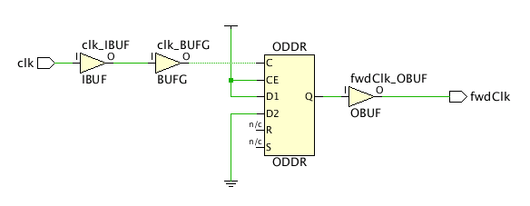

フォワード クロックの理解
図: フォワード クロックの例 :

ダブル データ レートのレジスタ ODDR は内部クロック clk を複製し、制御された挿入遅延を使用してデバイス外に転送します。この例では、ODDR セルがクロックの立ち上がりエッジで 1 (VDD)、立ち下がりエッジで 0 (GND) を伝搬し、波形が内部クロックの波形と同じになります。次はその例です。
create_generated_clock -name fwdClk -divide_by 1 \
-source [get_pins ODDR/C] [get_ports fwdClk]
ウィザードでは、ODDR プリミティブの D1 および D2 ピンの定数の接続が認識され、正しい極性 (反転または非反転) で出力ポート fwdClk の生成クロックが推奨されます。
[Forwarded Clocks] ページの理解
- [Recommended Constraints] : タイミング制約ウィザードでは、定数入力のあるダブル データ レート レジスタで駆動される出力ポートに対してフォワード クロックを作成するように推奨されます。
- [Tcl Command Preview] : [Recommended Constraints] にリストされているようにフォワード クロックを定義するのに使用される create_generated_clock コマンドが表示されます。これらの制約がデザインに追加されます。
- [Existing Constraints] : 現在定義されている生成クロック制約が表示されます。
上記のセクションにはそれぞれツールバーもあり、次のコマンドの 1 つまたは複数を実行できます
 |
Search | 検索文字列を入力するためのテキスト入力フィールドが表示されます。 |
 |
Select All | 推奨される制約すべてを選択します。 |
 |
Edit selected row | クロックの反転属性を定義するための [Forwarded Clock Constraints] ダイアログ ボックスを開きます。この属性は、[Recommended Constraints] リストのフィールドを直接クリックしても編集できます。 |
|
Schematic | 回路図ウィンドウを開いて、選択したフォワード クロックのパスが表示されます。 |
 |
Report Clock Networks | [Report Clock Networks] コマンドを実行して、新しいクロック ネットワーク レポートが生成されます。 ヒント: クロック ネットワークは、[Clock Networks] ウィンドウにレポートされます。
|
関連項目
| 『Vivado Design Suite ユーザー ガイド : 制約の使用』 (UG903) の「フォワード クロック」 |